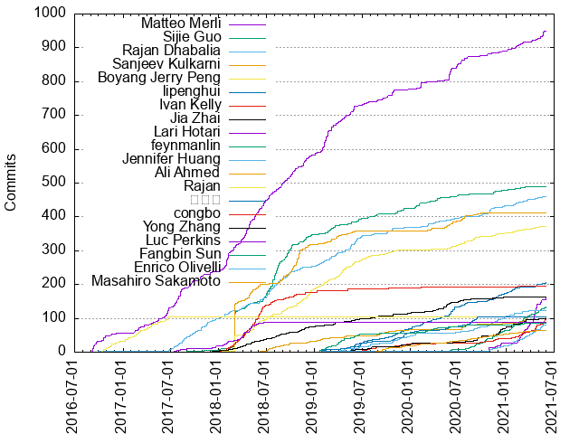

Authors
| Author | Commits (%) | + lines | - lines | First commit | Last commit | Age | Active days | # by commits |
|---|
| Matteo Merli | 949 (14.07%) | 444879 | 303202 | 2016-09-07 | 2021-05-29 | 1725 days, 0:58:24 | 511 | 1 |
| Sijie Guo | 490 (7.27%) | 132309 | 110847 | 2017-09-01 | 2021-05-22 | 1359 days, 5:05:39 | 285 | 2 |
| Rajan Dhabalia | 459 (6.81%) | 81090 | 25245 | 2016-09-29 | 2021-05-17 | 1691 days, 6:14:03 | 314 | 3 |
| Sanjeev Kulkarni | 412 (6.11%) | 47796 | 28014 | 2017-12-07 | 2020-10-08 | 1036 days, 0:37:50 | 218 | 4 |
| Boyang Jerry Peng | 372 (5.52%) | 103425 | 35145 | 2017-11-07 | 2021-05-26 | 1295 days, 19:30:10 | 278 | 5 |
| lipenghui | 205 (3.04%) | 124517 | 9862 | 2019-04-22 | 2021-06-01 | 771 days, 6:11:52 | 160 | 6 |
| Ivan Kelly | 194 (2.88%) | 26569 | 2798 | 2017-12-14 | 2021-02-15 | 1159 days, 7:37:10 | 128 | 7 |
| Jia Zhai | 163 (2.42%) | 100541 | 16697 | 2017-08-18 | 2021-01-13 | 1244 days, 10:02:37 | 142 | 8 |
| Lari Hotari | 160 (2.37%) | 17706 | 15369 | 2020-09-29 | 2021-06-02 | 246 days, 12:49:53 | 76 | 9 |
| feynmanlin | 133 (1.97%) | 18521 | 2282 | 2020-04-02 | 2021-06-01 | 425 days, 8:26:31 | 93 | 10 |
| Jennifer Huang | 122 (1.81%) | 80860 | 7718 | 2019-03-28 | 2021-03-26 | 729 days, 13:18:36 | 90 | 11 |
| Ali Ahmed | 105 (1.56%) | 13278 | 9141 | 2018-04-28 | 2021-05-14 | 1112 days, 7:42:07 | 83 | 12 |
| Rajan | 104 (1.54%) | 20942 | 3277 | 2016-10-08 | 2017-06-22 | 257 days, 11:39:50 | 68 | 13 |
| 冉小龙 | 103 (1.53%) | 102377 | 2650 | 2019-01-26 | 2020-09-11 | 594 days, 14:36:59 | 73 | 14 |
| congbo | 101 (1.50%) | 30985 | 6384 | 2019-03-19 | 2021-06-02 | 805 days, 21:11:36 | 74 | 15 |
| Yong Zhang | 99 (1.47%) | 45943 | 2035 | 2019-04-13 | 2021-05-13 | 760 days, 18:34:41 | 81 | 16 |
| Luc Perkins | 89 (1.32%) | 69951 | 25340 | 2017-06-20 | 2018-06-22 | 367 days, 3:49:39 | 63 | 17 |
| Fangbin Sun | 86 (1.28%) | 10211 | 1137 | 2019-01-15 | 2021-03-10 | 784 days, 15:43:58 | 73 | 18 |
| Enrico Olivelli | 81 (1.20%) | 68729 | 2309 | 2018-12-25 | 2021-06-02 | 890 days, 0:00:32 | 64 | 19 |
| Masahiro Sakamoto | 65 (0.96%) | 4560 | 871 | 2019-08-14 | 2021-05-27 | 651 days, 17:50:13 | 59 | 20 |
These didn't make it to the top: massakam, jai1, Anonymitaet, tuteng, ran, Yunze Xu, Yijie Shen, hangc0276, HuanliMeng, Sergii Zhevzhyk, Like, Jai Asher, hrsakai, cckellogg, Yu Liu, Marvin Cai, Aloys, xiaolong ran, Yuki Shiga, Guangning, sijia-w, Renkai Ge, Monica-zy, wpl, Addison Higham, penghui, Ezequiel Lovelle, David Kjerrumgaard, linlinnn, Eren Avsarogullari, Rui Fu, Dave Rusek, guangning, sschepens, nkurihar, Zike Yang, Michael Marshall, Yi Tang, Masakazu Kitajo, Andrews, liudezhi, k2la, WangJialing, huangdx0726, Yuto Furuta, Yang Yang, Grant Wu, Shivji Kumar Jha, Brad McMillen, bobbeyreese, yush1ga, legendtkl, Devin Bost, Brian Candler, Alexandre DUVAL, ltamber, YANGLiiN, Varghese Cottagiri, Hao Zhang, Chris Bartholomew, Abhilash Mandaliya, Yuvaraj L, Xiaobing Fang, Shoothzj, Renkai, Neng Lu, Licht Takeuchi, luceneReader, Zixuan Liu, Samuel, Guangning E, Frank J Kelly, Andrey Yegorov, vzhikserg, rdhabalia, Weijie Guo, Tboy, Richard Yu, Keven Li, sijianliang, rshermanTHG, roman-popenov, hapihu, dockerzhang, Yuri Mizushima, WJL3333, Ryan Slominski, Rolf Arne Corneliussen, Kevin Wilson, Cristian, Christophe Bornet, Bruno Bonnin, Adam Williams, かとかい, zsh0139, wangyufan, vicaya, limingnihao, hnail, Zhanpeng Wu, Ting Yuan, Raman Gupta, Raj, Nick Rivera, Luke Stephenson, Kévin Dunglas, Kim Christian Gaarder, Huanli Meng, Guillaume Rosauro, Fernando Miguélez Palomo, EugenDueck, Easyfan Zheng, Andy Walker, shustsud, saandrews, pkumar-singh, penny, lsy180829, joefk, jianyun, jdbeck, Yuta Mochizuki, Yoann Ciabaud, YeChao Chen, Tong, Tenzin Wangdhen, Sijia Wang, Shen Liu, SakaSun, Rad Gruchalski, Pierre Zemb, Nathan Mills, Kristi, Kezhu Wang, Ke Li, Kai, Jonathan Ellis, Johan Hernandez, Guillaume Braibant, ForwardXu, Fernando Rejon Barrera, Emil Shakirov, Deepak Sah, Chris Day, Caleb Epstein, 車大燃画, 赵家贝, zhaorongsheng, zeo1995, wangjialing218, sky-big, se7enkings, sbourkeostk, pheecian, ntysdd, newur, mlyahmed, mikecaat, lan, kaushik-develop, horsteff, haphut, guodongyang, geetha-rangaswamaiah, fangpengcheng95, csthomas1, cimura, chrismiller, bilahepan, belinda-wong, avimas, atlantic2099, Zhenglai Zhang, Yuta Takaba, XiaoZYang, Vincent Xie, Vincent Royer, Victor, Tetsuya Morimoto, TT, Szymon Andrzejczak, Sunkwan Kwon, SandyWei, Rudy Steiner, Nicolas Ha, Naveen Kumar, Ming, Michal Koziorowski, Mak, Livio Benčik, Lin Yiming, Kristian Andersen, Kimura, T, Jipei wang, Jiechuan Chen, Jianyun Zhao, Jean-Bernard van Zuylen, Géraud Dugé de Bernonville, Guchman, Greg Methvin, Gilles Barbier, Fred Eisele, Daniel Jorge, Byron Ruth, Brett, Brandon, BlackJohnny, Bharani Chadalavada, BewareMyPower, Anup Ghatage, Andrey Falko, Andreas Neustifter, Alex Yaroslavsky, Aaron Robert, 浪尖, zuquan song, zip, zhaohaidao, z2665, yuliangwan, yixin, ybb1798, xujianhai666, willome, wenbingshen, wangyuwei, wangyunpeng666, tuhaihe, tomix1337, tison, testfixer, ssunorz, snow4young, schahal, rushsky518, rstout610, ravi-vaidyanathan, phijohns-tibco, osullivan, oncode, odidev, mazhen, maurice barnum, marcusalmeida, mantuliu, lsroudi, liyuntao, li jinquan, kyontan, kuangye, kishorebhat-p, kilient, kezhenxu94, johnwagster, jiangbin, hexiaocheng, hello zepp, hefeiyun, haooran, hao zhang, hanbo1990, h3nng, gbensa, futeng, forjingma, feiyuyitiao, ericpsimon, duli559, double-bin, dengziming, danielccyr, chanruida, boncheff, baomingyu, atezs82, antimpatel, agilob, Zuyu ZHANG, Yuya Ebihara, Yuku Takahashi, Yuanbo Liu, Yifan Zhang, YYTVicky, Xiaoguang Sun, William Fry, Will Mooreston, Will McCarley, Vladimir Shchur, VK, Tommy Li, Tom Manderson, Thomas Memenga, Tevic, Sylvia, Sylvere Richard, Steven Le Roux, Steve M. Kim, Stepan Mazurov, Simon Cheng, Siddharth Boobna, Seb Ospina, Rotem Yaari, Robert Moucha, Rikuo Takahama, Richi Wong, Reugn, RathipriyaSingaram, Poule Dodue, Piotr Jander, Paweł Łoziński, Pavel, Patrick Lucas, Miloš Matijašević, Michal, Matthew Follegot, Martin Traverso, Marcus Berndt, Marco Pfatschbacher, Marc Enriquez, Malcolm Taylor, MahdiZareie, MR, Luo Tian, Loïc Tosser, Lijingfeng, Liang-Chi Hsieh, Li Li, Le Labourier Marc, Lay, Laurent Chriqui, Lars Levie, Lagranmoon, Kun Song, Kirs, Kimura Takesi, Kev Jackson, Karthikeyan Palanivelu, Kamil Breguła, Justin Johnson, Junjie Qian, Julio H Morimoto, Joshua Odmark, Joshua Decosta, Jordan Pilat, John Harris, Johannes Wienke, Jimmy Casey, Jerry Fan, Jeremy Gailor, Jason K, Jarek Potiuk, Jai ASher, Jacob Burroughs, Ivan Stoilov, Isaiah Rairdon, Irek Nazmiev, Ilya Mashchenko, Hwan-Joon Choi, Heiss, Hans Meyer, Guowei Tian, Gordeev Boris, Gjiangtao, Girish Ramnani, Gil Yehuda, Geoffroy Couprie, Ganesh Subramanian, Gabriel Volpe, FuqiaoWang, Fretiq Labs, François Laignel, Ever, ErhWen Kuo, Emmanuel Feller, Edward Xie, Dzmitry Kazimirchyk, Deon van der Vyver, David Willcox, David Tinker, David Phillips, Daniel Orf, Daniel Jeon, Daniel Andersson, Collignon-Ducret Rémi, Chloe, Chen Zhanpeng, Cem Aladogan, Bryce M, Brian Walendzinski, Brad Dunn, Bogdan, Binbin Guo, Benjamin Huo, Ben Schofield, Arvin, Anton K, Antoine Comte, Ankur Chandra, Andrey, Andres Garagiola, Andrea Simonini, Ambud, Alice, Alex Rufo, Alex Mault, Adithya Krishna, Aaron Gong, 4onni
Only top 20 authors shown
Only top 20 authors shown
| Month | Author | Commits (%) | Next top 5 | Number of authors |
|---|
| 2021-06 | Lari Hotari | 4 (25.00% of 16) | congbo, Zike Yang, xiaolong ran, lipenghui, linlinnn | 10 |
| 2021-05 | Matteo Merli | 24 (12.57% of 191) | congbo, feynmanlin, Lari Hotari, Enrico Olivelli, linlinnn | 57 |
| 2021-04 | Lari Hotari | 61 (30.96% of 197) | congbo, Enrico Olivelli, linlinnn, feynmanlin, lipenghui | 41 |
| 2021-03 | Lari Hotari | 34 (16.35% of 208) | feynmanlin, Yong Zhang, Ali Ahmed, Enrico Olivelli, Yu Liu | 49 |
| 2021-02 | Lari Hotari | 21 (10.19% of 206) | Matteo Merli, feynmanlin, Marvin Cai, congbo, Rajan Dhabalia | 59 |
| 2021-01 | feynmanlin | 14 (10.37% of 135) | lipenghui, Enrico Olivelli, Renkai Ge, Yong Zhang, Matteo Merli | 46 |
| 2020-12 | Yong Zhang | 21 (11.23% of 187) | Jennifer Huang, feynmanlin, Renkai Ge, lipenghui, sijia-w | 50 |
| 2020-11 | feynmanlin | 13 (7.88% of 165) | xiaolong ran, ran, lipenghui, Jennifer Huang, Sijie Guo | 48 |
| 2020-10 | Rajan Dhabalia | 14 (10.29% of 136) | hangc0276, feynmanlin, Lari Hotari, xiaolong ran, Matteo Merli | 48 |
| 2020-09 | feynmanlin | 12 (9.38% of 128) | Yong Zhang, 冉小龙, Jennifer Huang, ran, hangc0276 | 43 |
| 2020-08 | 冉小龙 | 14 (13.46% of 104) | ran, Boyang Jerry Peng, Masahiro Sakamoto, Jennifer Huang, sijia-w | 33 |
| 2020-07 | Matteo Merli | 18 (12.08% of 149) | Sanjeev Kulkarni, Ali Ahmed, lipenghui, Boyang Jerry Peng, HuanliMeng | 37 |
| 2020-06 | Matteo Merli | 28 (15.30% of 183) | lipenghui, HuanliMeng, Sanjeev Kulkarni, Boyang Jerry Peng, Rajan Dhabalia | 46 |
| 2020-05 | Matteo Merli | 20 (14.60% of 137) | Jia Zhai, Sanjeev Kulkarni, 冉小龙, lipenghui, Sergii Zhevzhyk | 47 |
| 2020-04 | Sijie Guo | 10 (10.00% of 100) | guangning, lipenghui, Sergii Zhevzhyk, Rajan Dhabalia, luceneReader | 39 |
| 2020-03 | Yijie Shen | 35 (30.97% of 113) | Rajan Dhabalia, Fangbin Sun, lipenghui, Sanjeev Kulkarni, Sijie Guo | 31 |
| 2020-02 | Matteo Merli | 18 (14.88% of 121) | lipenghui, Yijie Shen, Sijie Guo, roman-popenov, Sergii Zhevzhyk | 50 |
| 2020-01 | Guangning | 13 (13.27% of 98) | Sijie Guo, Sergii Zhevzhyk, lipenghui, Jennifer Huang, 冉小龙 | 37 |
| 2019-12 | 冉小龙 | 13 (16.46% of 79) | lipenghui, congbo, tuteng, Sijie Guo, Jennifer Huang | 37 |
| 2019-11 | lipenghui | 11 (9.73% of 113) | Sijie Guo, Jennifer Huang, 冉小龙, Brian Candler, huangdx0726 | 36 |
| 2019-10 | Matteo Merli | 23 (18.55% of 124) | Rajan Dhabalia, lipenghui, Boyang Jerry Peng, Anonymitaet, tuteng | 34 |
| 2019-09 | Anonymitaet | 29 (23.02% of 126) | Monica-zy, Masahiro Sakamoto, tuteng, Matteo Merli, Like | 32 |
| 2019-08 | Yi Tang | 11 (9.91% of 111) | Anonymitaet, tuteng, congbo, Sijie Guo, Yong Zhang | 34 |
| 2019-07 | Matteo Merli | 10 (10.87% of 92) | Boyang Jerry Peng, lipenghui, massakam, vzhikserg, tuteng | 26 |
| 2019-06 | Rajan Dhabalia | 24 (16.78% of 143) | lipenghui, Matteo Merli, Boyang Jerry Peng, Fangbin Sun, 冉小龙 | 35 |
| 2019-05 | Matteo Merli | 23 (14.65% of 157) | Rajan Dhabalia, Boyang Jerry Peng, lipenghui, Like, tuteng | 33 |
| 2019-04 | Boyang Jerry Peng | 22 (17.19% of 128) | Matteo Merli, Fangbin Sun, Rajan Dhabalia, Jennifer Huang, Sanjeev Kulkarni | 30 |
| 2019-03 | Matteo Merli | 25 (17.36% of 144) | Rajan Dhabalia, Sanjeev Kulkarni, Sijie Guo, Boyang Jerry Peng, Jia Zhai | 36 |
| 2019-02 | Matteo Merli | 54 (36.49% of 148) | Boyang Jerry Peng, Rajan Dhabalia, Sijie Guo, Fangbin Sun, Sanjeev Kulkarni | 24 |
| 2019-01 | Matteo Merli | 17 (14.05% of 121) | Boyang Jerry Peng, Rajan Dhabalia, wpl, Jai Asher, Fangbin Sun | 32 |
| 2018-12 | Boyang Jerry Peng | 27 (23.08% of 117) | Sijie Guo, Matteo Merli, Eren Avsarogullari, Sanjeev Kulkarni, penghui | 24 |
| 2018-11 | Sanjeev Kulkarni | 33 (23.08% of 143) | Matteo Merli, Sijie Guo, Boyang Jerry Peng, Jia Zhai, Rajan Dhabalia | 24 |
| 2018-10 | Sanjeev Kulkarni | 44 (28.39% of 155) | Matteo Merli, Sijie Guo, Boyang Jerry Peng, Rajan Dhabalia, Ivan Kelly | 29 |
| 2018-09 | Sijie Guo | 32 (22.86% of 140) | Matteo Merli, Rajan Dhabalia, Sanjeev Kulkarni, Boyang Jerry Peng, Ivan Kelly | 15 |
| 2018-08 | Sijie Guo | 55 (35.48% of 155) | Matteo Merli, Rajan Dhabalia, Sanjeev Kulkarni, Jia Zhai, Boyang Jerry Peng | 16 |
| 2018-07 | Sijie Guo | 47 (27.81% of 169) | Rajan Dhabalia, Matteo Merli, Boyang Jerry Peng, Ali Ahmed, Ivan Kelly | 16 |
| 2018-06 | Ivan Kelly | 38 (24.20% of 157) | Matteo Merli, Sijie Guo, Rajan Dhabalia, Boyang Jerry Peng, Sanjeev Kulkarni | 16 |
| 2018-05 | Matteo Merli | 38 (23.75% of 160) | Ivan Kelly, Boyang Jerry Peng, Luc Perkins, Sanjeev Kulkarni, Jia Zhai | 15 |
| 2018-04 | Matteo Merli | 44 (26.35% of 167) | Ivan Kelly, Luc Perkins, Sanjeev Kulkarni, Sijie Guo, Rajan Dhabalia | 14 |
| 2018-03 | Sijie Guo | 32 (20.78% of 154) | Matteo Merli, Ivan Kelly, Sanjeev Kulkarni, cckellogg, Luc Perkins | 17 |
| 2018-02 | Matteo Merli | 42 (21.00% of 200) | Sijie Guo, Sanjeev Kulkarni, Boyang Jerry Peng, Rajan Dhabalia, Ivan Kelly | 19 |
| 2018-01 | Sanjeev Kulkarni | 75 (35.38% of 212) | Sijie Guo, Boyang Jerry Peng, Matteo Merli, Rajan Dhabalia, Luc Perkins | 15 |
| 2017-12 | Sanjeev Kulkarni | 28 (32.18% of 87) | Sijie Guo, Rajan Dhabalia, Luc Perkins, Matteo Merli, massakam | 14 |
| 2017-11 | Rajan Dhabalia | 17 (39.53% of 43) | Matteo Merli, Yuki Shiga, hrsakai, nkurihar, massakam | 11 |
| 2017-10 | Rajan Dhabalia | 18 (33.96% of 53) | Matteo Merli, massakam, Yuki Shiga, Andrews, hrsakai | 10 |
| 2017-09 | Matteo Merli | 21 (37.50% of 56) | Rajan Dhabalia, Sijie Guo, Andrews, jai1, hrsakai | 12 |
| 2017-08 | Matteo Merli | 33 (48.53% of 68) | Rajan Dhabalia, jai1, Luc Perkins, hrsakai, Yuki Shiga | 7 |
| 2017-07 | Matteo Merli | 25 (44.64% of 56) | Rajan Dhabalia, jai1, Yuki Shiga, Luc Perkins, nkurihar | 7 |
| 2017-06 | Matteo Merli | 31 (39.74% of 78) | Rajan, jai1, Rajan Dhabalia, nkurihar, Yuki Shiga | 11 |
| 2017-05 | Matteo Merli | 14 (35.00% of 40) | Rajan, Brad McMillen, jai1, bobbeyreese, Yuki Shiga | 7 |
| 2017-04 | Rajan | 14 (31.11% of 45) | jai1, Matteo Merli, bobbeyreese, Yuki Shiga, hrsakai | 9 |
| 2017-03 | Matteo Merli | 14 (28.00% of 50) | Rajan, jai1, hrsakai, rdhabalia, nkurihar | 13 |
| 2017-02 | Rajan | 13 (30.23% of 43) | jai1, Matteo Merli, saandrews, rdhabalia, nkurihar | 9 |
| 2017-01 | Rajan | 11 (64.71% of 17) | sschepens, saandrews, haooran, Matteo Merli | 5 |
| 2016-12 | Rajan | 8 (72.73% of 11) | yush1ga, Matteo Merli, Aaron Gong | 4 |
| 2016-11 | Rajan | 13 (52.00% of 25) | sschepens, Matteo Merli | 3 |
| 2016-10 | Matteo Merli | 16 (45.71% of 35) | Rajan, sschepens, h3nng, Siddharth Boobna, Rajan Dhabalia | 7 |
| 2016-09 | Matteo Merli | 32 (68.09% of 47) | Raj, Rad Gruchalski, yush1ga, Rajan Dhabalia, rdhabalia | 9 |
| Year | Author | Commits (%) | Next top 5 | Number of authors |
|---|
| 2021 | Lari Hotari | 134 (14.06% of 953) | feynmanlin, Enrico Olivelli, congbo, Matteo Merli, lipenghui | 126 |
| 2020 | Matteo Merli | 114 (7.03% of 1621) | lipenghui, Rajan Dhabalia, feynmanlin, Jennifer Huang, Sijie Guo | 203 |
| 2019 | Matteo Merli | 194 (13.06% of 1486) | Boyang Jerry Peng, Rajan Dhabalia, Sijie Guo, lipenghui, Anonymitaet | 152 |
| 2018 | Matteo Merli | 344 (17.83% of 1929) | Sijie Guo, Sanjeev Kulkarni, Boyang Jerry Peng, Ivan Kelly, Rajan Dhabalia | 63 |
| 2017 | Matteo Merli | 184 (28.93% of 636) | Rajan Dhabalia, Rajan, jai1, Yuki Shiga, Sanjeev Kulkarni | 35 |
| 2016 | Matteo Merli | 55 (46.61% of 118) | Rajan, sschepens, Raj, yush1ga, Rajan Dhabalia | 14 |
| Domains | Total (%) |
|---|
| gmail.com | 2547 (37.77%) |
|---|
| apache.org | 2151 (31.90%) |
|---|
| users.noreply.github.com | 1012 (15.01%) |
|---|
| yahoo-corp.jp | 196 (2.91%) |
|---|
| 163.com | 163 (2.42%) |
|---|
| tencent.com | 129 (1.91%) |
|---|
| qq.com | 89 (1.32%) |
|---|
| 126.com | 65 (0.96%) |
|---|
| yahoo-inc.com | 43 (0.64%) |
|---|
| streamnative.io | 42 (0.62%) |
|---|